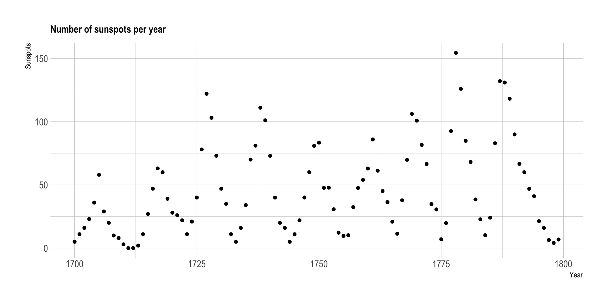
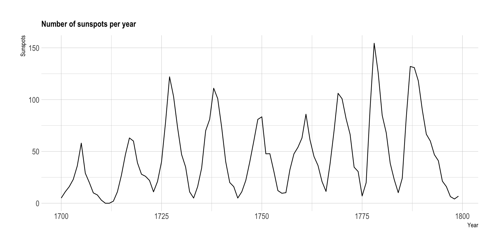

Connect your dots when the X-axis is ordered
A collection of common
dataviz caveats
by Data-to-Viz.com

Connect your dots when the X-axis is ordered
Let’s consider a dataset composed by two numeric variables. The x-axis represents years, and the y-axis the yearly sunspot numbers from 1749 to 1983. (Sunspots are temporary phenomena on the Sun’s photosphere that appear as spots darker than the surrounding areas.). The original dataset comes from this scientific publication, related by Andrews et al..
# Libraries
library(tidyverse)
library(hrbrthemes)
# Load dataset: comes with R
data <- data.frame(
Year = as.numeric(time(sunspot.year)),
Sunspots = as.numeric(sunspot.year)
)
# Plot
data %>%
head(100) %>%
ggplot( aes(x=Year, y=Sunspots)) +
geom_point() +
ggtitle("Number of sunspots per year") +
theme_ipsum() +
theme(
plot.title = element_text(size=12)
)
Here, it is hard to see any trend. It looks like no relationships exist between time and sunspot number.
However, if your x-axis is ordered, like for time, you should connect dots.
Let’s take the exact same graphic, except that we connect dots together with segments. We switch from a scatter plot to a line plot.
# Libraries
library(tidyverse)
library(hrbrthemes)
# Load dataset: comes with R
data <- data.frame(
Year = as.numeric(time(sunspot.year)),
Sunspots = as.numeric(sunspot.year)
)
# Plot
data %>%
head(100) %>%
ggplot( aes(x=Year, y=Sunspots)) +
geom_line() +
ggtitle("Number of sunspots per year") +
theme_ipsum() +
theme(
plot.title = element_text(size=12)
)
Now, it is obvious that a pattern exists. The sunspot numbers follow this nearly periodic 11-year change in the sun’s activity, making the line go up and down quite regularly. It is also clear that some spikes are higher than others, with maximum smoothed sunspot numbers ranging from approximately 50 to 180.
Data To Viz is a comprehensive classification of chart types organized by data input format. Get a high-resolution version of our decision tree delivered to your inbox now!

A work by Yan Holtz for data-to-viz.com